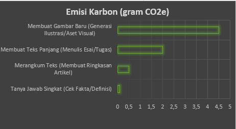
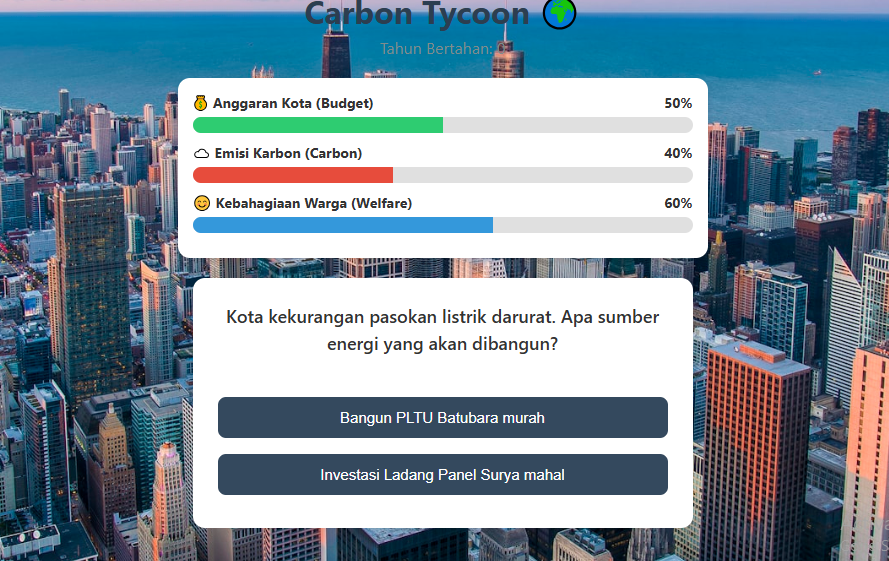
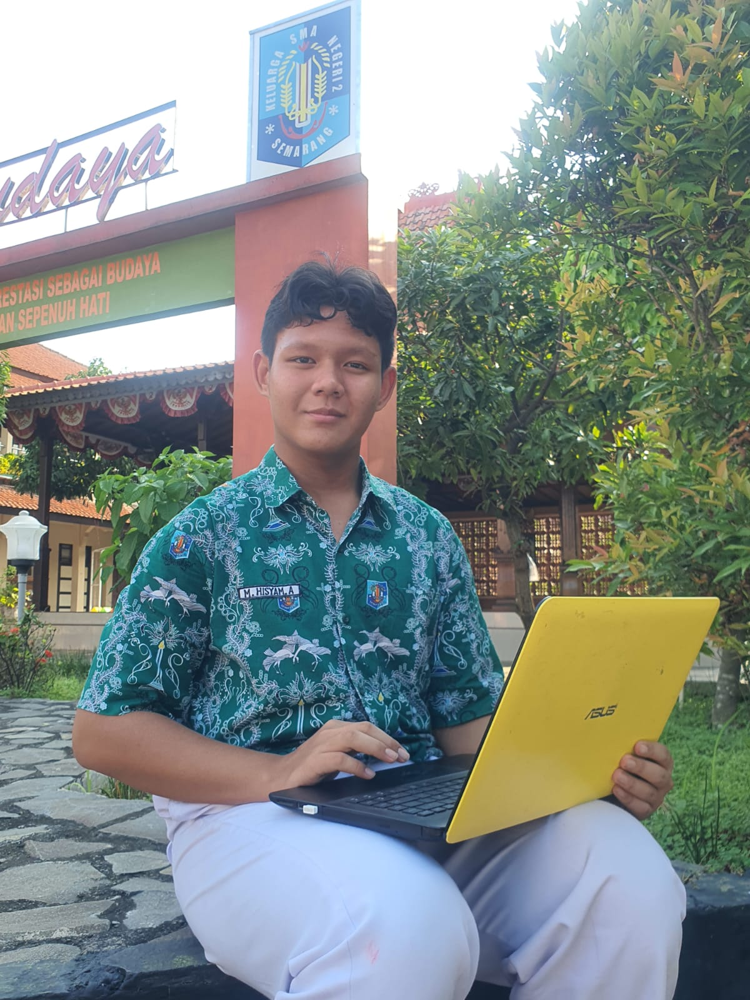
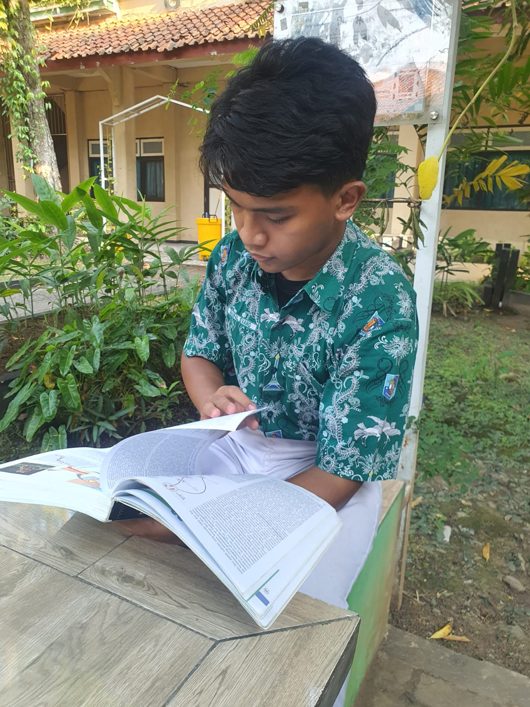

_20260513_113737_0000.png)
Tahukah Anda bahwa menggunakan AI untuk menghasilkan satu gambar dapat menghasilkan emisi karbon lebih banyak daripada mengisi daya penuh ponsel cerdas Anda?
Jelajah SekarangMenurut penelitian oleh (Shanji Yao dkk., 2025), AI meningkatkan produktivitas karbon dengan mengoptimalkan struktur industri, mempercepat inovasi teknologi hijau, dan meningkatkan efisiensi alokasi sumber daya untuk mengurangi limbah. Dampak positif ini mengikuti efek ambang batas, artinya manfaat lingkungan dari AI hanya akan melebihi biaya energinya setelah suatu wilayah mencapai tingkat kematangan ekonomi dan digital tertentu. Pada akhirnya, AI mengkonfigurasi ulang produksi tradisional menjadi sistem yang lebih cerdas dan bersih dengan mengintegrasikan pemantauan lingkungan dan biaya emisi secara langsung ke dalam pengambilan keputusan perusahaan.
Pelajari
📊 Skala Emisi Aktivitas AI
Setiap instruksi (prompt) yang kita berikan ke AI membutuhkan daya komputasi yang berbeda di pusat data. Berdasarkan studi ilmiah internasional (Luccioni et al., 2023), berikut adalah perbandingan nyata jumlah emisi karbon yang dihasilkan per satu kali interaksi.

Proses komputasi piksel untuk Membuat 1 Gambar Baru membutuhkan energi yang sangat masif. Emisi yang dilepaskan setara dengan melakukan 22x merangkum teks atau 450x tanya jawab pendek dalam satu waktu! Meskipun angka per prompt terlihat kecil dalam hitungan gram, akumulasi penggunaan harian oleh jutaan pelajar di seluruh dunia menciptakan jejak karbon raksasa yang membebani bumi kita.
Pelajari
Langkah Nyata Menjadi Wise User
Menyelamatkan bumi bukan berarti kita harus berhenti total menggunakan teknologi. Kuncinya ada pada efisiensi. Sebagai pelajar, kamu bisa menekan angka emisi digital secara signifikan dengan menerapkan 3 kebiasaan hijau berikut:
Terapkan Konstruksi Prompt Efektif
Buat instruksi yang jelas, spesifik, dan langsung pada inti tugas sejak awal. Cara ini menghindari proses generasi ulang (re-prompt) berulang kali yang membuang-buang energi listrik pusat data secara sia-sia.
Batasi Fitur Generatif Gambar
Gunakan fitur pembuat gambar AI (Text-to-Image) hanya saat benar-benar krusial atau sangat dibutuhkan untuk visualisasi tugas. Ingat, emisi 1 gambar setara dengan energi ratusan kali chat teks biasa!
Jaga Keseimbangan Kognitif
Jadikan AI murni sebagai asisten untuk memantik ide awal atau mencari referensi, bukan untuk menyalin tugas secara utuh. Utamakan analisis dan pemikiran kritismu sendiri agar kreativitasmu tetap tajam sekaligus menghemat daya komputasi bumi.
"Mulai dari Diri Sendiri!"
Langkah kecilmu dalam menghemat prompt hari ini adalah investasi oksigen yang berharga untuk masa depan bumi. Yuk, langsung uji seberapa hijau aktivitas digitalmu lewat fitur CarbsCulator di bawah ini! 👇
Mengapa emisi karbon yang dihasilkan dari penggunaan AI dapat mengancam lingkungan? Meskipun kontribusinya masih kecil, seiring waktu hal itu pada akhirnya akan menjadi masalah besar.
Learn More0 gram CO₂e
🤖✨ Masukkan aktivitas AI yang kamu lakukan, lalu lihat berapa jejak karbon digital yang dihasilkan hari ini. Yuk jadi pengguna AI yang lebih bijak dan ramah lingkungan! 🌱💚
Kelola kota, jaga anggaran, kurangi emisi karbon, dan tingkatkan kesejahteraan warga.
Mainkan Sekarang

Saya sangat antusias dengan pengembangan web, desain UI/UX, dan membangun proyek teknologi kreatif yang meningkatkan kesadaran terhadap isu-isu lingkungan.
Berfokus pada penelitian lingkungan, ide keberlanjutan, dan menciptakan konsep visual yang menarik untuk TraCkO2.

Tertarik dengan inovasi teknologi dan menganalisis bagaimana penggunaan AI dapat memengaruhi emisi karbon di masa depan.